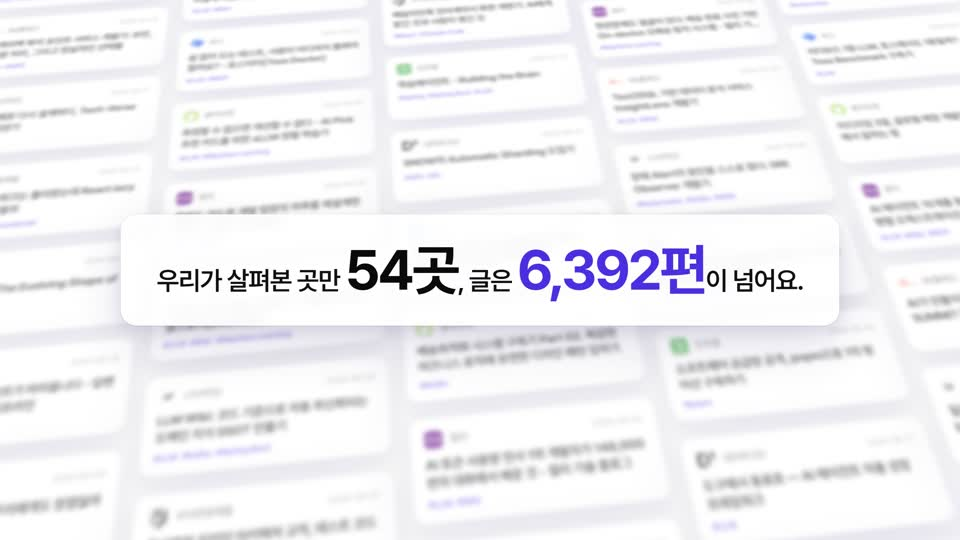
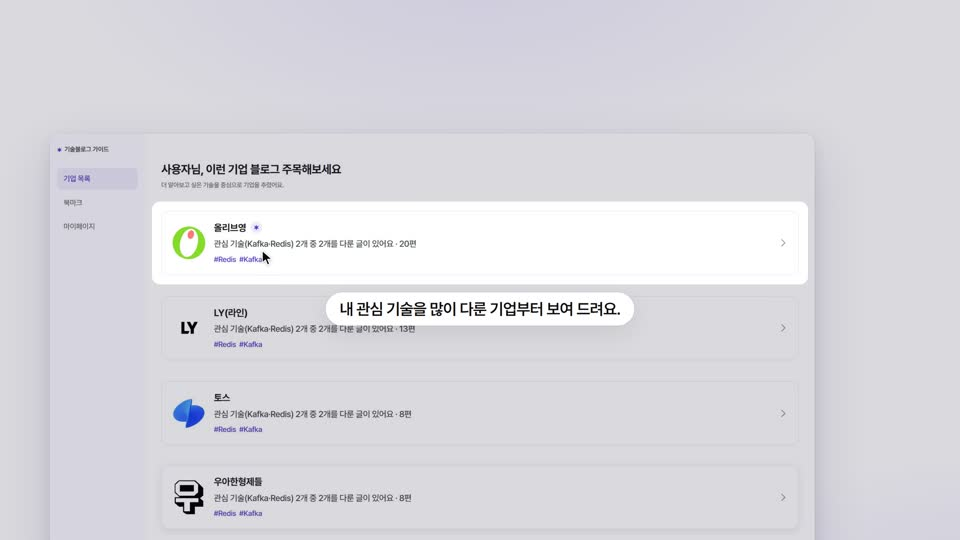
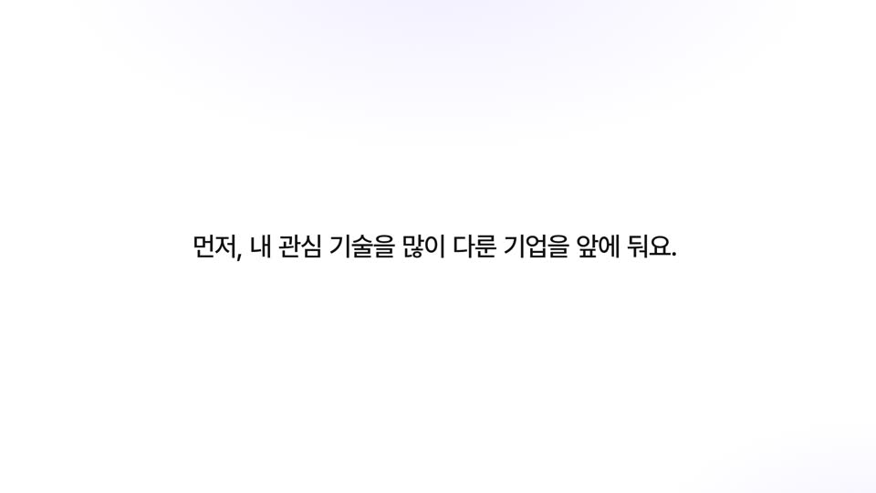
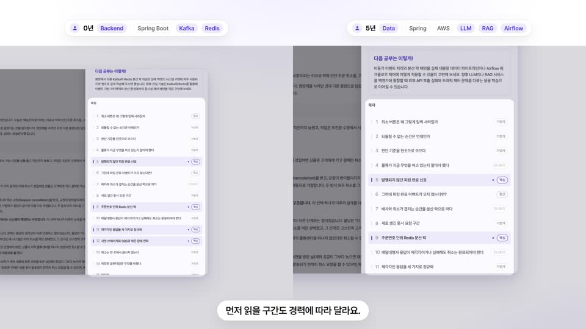

AIM광운대학교 ERP연구회 · MIS×AI 스터디
1기 7회차2026. 11. 16
같은 AI,
다른 결과
과제 결산부터 하고, 에이전트로 발표자료 · 영상을 만들어 품질을 올리는 법을 실제 화면으로 봅니다.
먼저과제 결산
다음발표자료 · 영상
끝으로팀 · 포트폴리오
1과제 결산두 에이전트 검수 결과
2발표자료캔바 대신 HTML
3영상음원 · BPM · 콘티
4팀 이끌기개발 · 비개발 공통
5포트폴리오사실로 크게 보이기
오늘은 에이전트로 산출물 품질을 올리는 법입니다
학교 발표 · 공모전에서 그대로 쓸 수 있는 발표자료와 영상을 실제로 만든 화면으로 봅니다.
1과제 결산
검수 방식과 두 에이전트 결과, 허브에 들어가는 길
20분
2발표자료
캔바의 한계, HTML 덱, 만드는 순서와 시키는 문장
30분
3영상
음원 받기, BPM으로 장면 나누기, 콘티
30분
4팀과 포트폴리오
AI로 팀을 이끄는 법, 결과물을 남기는 법
30분
예시는 전부 실제로 만들고 제출한 것입니다. 잘 안 된 것도 같이 봅니다
과제 결산발표자료영상팀 이끌기포트폴리오03 / 45
PART 1
에이전트 과제 결산
들어온 에이전트 두 개를 검수했습니다. 어떻게 쟀는지, 무엇이 나왔는지, 허브에 어떻게 들어가는지 봅니다.
과제 결산발표자료영상팀 이끌기포트폴리오04 / 45
정답을 먼저 정하고, 아무 설정 없는 새 대화에서 돌렸습니다
1정답부터
실제 기사 · 공고로 재료를 만들고 정답표를 먼저 씀. 돌린 뒤에 정답을 맞추지 않음
2새 대화 3회
같은 재료를 3번. 매번 같은 판정이 나와야 운영에 넣을 수 있음
3기계로 대조
근거 칸 인용을 원문과 글자 단위로 대조. 문장 길이도 스크립트로 셈
4본래 임무 실행
에이전트가 원래 하려던 일을 실제로 한 번 시킴
첫 3회는 버림
운영진 PC의 AI 규칙이 검수 대화에 새어 들어가, 출력 끝에 여러분 지시에 없던 「운용 피드백」이 붙었습니다. 설정을 모두 끈 대화로 다시 돌렸습니다.
검수도 AI 통제입니다. 무엇이 섞여 들어왔는지부터 확인합니다
과제 결산발표자료영상팀 이끌기포트폴리오05 / 45
기회 공고 에이전트는 웹에서 직접 찾아 판정했습니다
박건우 님 · 첫 실행에서 검색어 20개, 후보 18건, 본문 9건을 읽고 7건을 판정
채택공공데이터 활용 경진대회
한국체육산업개발 · 접수 11/2 ~ 12/1 · 제출물 = 기획서. 허브 공고 탭 칸 12개 그대로 나옴
설계가 보인 곳모르면 채택하지 않고 「확인 요청」으로 넘김. 못 읽은 후보 9건과 접속 실패 2건도 숨기지 않고 기록
신중한 쪽으로 기운 설계라 틀린 공고가 허브에 올라가지 않습니다
과제 결산발표자료영상팀 이끌기포트폴리오06 / 45
마케팅 브리핑 에이전트는 3번 모두 같은 답을 냈습니다
전영재 님 · 11월 실제 기사 메모 9건(중복 · 기간 밖 · 링크 없음 · 깨진 재료 포함)
함정같은 소식, 늦게 나온 기사
늦은 기사에만 있던 「640억원」 「2028년」을 먼저 나온 기사 카드에 섞지 않았습니다
다른 사람이 쓰려면지시문 본문에 「데이터 마케팅」이 두 곳 직접 적혀 있음. 이 두 곳을 「설정의 분야」로 바꾸면 다른 분야에서도 그대로 씀
숫자를 재료 그대로 옮기는 것, 요약 에이전트가 가장 자주 틀리는 곳입니다
과제 결산발표자료영상팀 이끌기포트폴리오07 / 45
허브에는 운영진이 확인한 뒤 들어갑니다
에이전트판정 · 허브 형식
공고는 공고 탭 칸 그대로, 브리핑은 카드 3장 그대로
사람운영진 확인
원문 대조 · 확인 요청에 답하기. 에이전트가 「원문 그대로가 아닐 수 있다」고 밝힌 인용은 다시 봄
허브공고 탭 · 인사이트
설계자 이름은 표시하지 않습니다. 본인 증빙은 결과서로
사람이 끼는 자리를 미리 정해 둔 자동화가 오래 돕니다
과제 결산발표자료영상팀 이끌기포트폴리오08 / 45
판정 기준은 내가 정한 목적대로 해내는가입니다
모두가 원하는 에이전트는 만들 수 없습니다. 분야와 범위는 본인이 정했고, 그 임무를 해냈는지로 봤습니다.
결과서에 들어 있는 것기준 · 방법 · 숫자
재료 건수, 실행 횟수, 항목별 결과
판정두 분 모두 합격
발주서 정답표 점수는 참고로 같이 적음
쓰는 곳포트폴리오 증빙
5부에서 쓰는 법을 봅니다
결과서 맨 아래 문장, 지우지 않습니다이 검수는 AIM 운영진이 정한 기준과 비공개 테스트로 한 것이다. 업계 인증이 아니다.
과제 결산발표자료영상팀 이끌기포트폴리오09 / 45
합격했지만 정보량은 아직 해결되지 않았습니다
허브 공고 · 인사이트의 가장 큰 문제는 정보가 적고 쓸모없는 것이 많다는 점이었습니다. 두 에이전트는 「틀린 걸 올리지 않는 것」을 해결했고, 「많이 · 깊게」는 아직입니다.
공고맞는 정보를 최대한 많이
목표 12건. 일주일에 1건이면 공고 탭의 의미가 크지 않습니다
인사이트적어도 되지만 깊게
카드 3장, 문장당 50자. 「의미」 줄이 「~흐름이다」 「~사례다」로 끝나 독자가 가져갈 판단이 적음
예: 「중소 광고주를 겨냥한 AI 광고 집행 흐름이다」
공고는 많이 · 맞게, 인사이트는 적게 · 깊게. 목적이 다르면 재는 숫자도 다릅니다
과제 결산발표자료영상팀 이끌기포트폴리오10 / 45
공고가 적었던 이유 네 가지, 첫째는 운영진 탓입니다
1읽은 걸 버리는 형식
발주서가 허브 형식의 코멘트 칸을 비우게 정함. 에이전트가 읽은 자격 · 비용 · 장소 · 제출물이 허브에 안 남음
발주서 A 4절 · 운영진 설계
2애매하면 숨김
「확인 요청」은 허브에 올라가지 않음. 정확성만 재는 합격 기준이 이 쪽으로 몰았음
확인 요청 3건 · 채택 1건
3중간에 멈춤
한도를 다 쓰기 전에 「시간상」 종료. 다 못 읽은 후보 9건
검색어 20/36 · 본문 9/50
4검색 엔진에 기댐
모음 사이트 목록을 끝까지 넘기지 않고 검색 결과 위주. 채용 사이트는 거의 못 봄
사람인 · 잡코리아 · 원티드 미탐색
인사이트는재료를 사람이 모아 오는 구조 + 짧은 카드 형식 + 「독자에게 어떤 의미인지」 기준이 모호해서 상투적인 문장으로 채워짐
합격 기준에 「허브에 올라갔을 때 쓸모」 항목이 없었습니다
과제 결산발표자료영상팀 이끌기포트폴리오11 / 45
보완법: 놓친 것도 재고, 읽은 것은 버리지 않습니다
1놓친 공고 수를 잰다
사람이 일주일 동안 찾은 공고 목록과 비교해 에이전트가 몇 %를 찾았는지. 정확도만 재면 적게 올리는 쪽이 이깁니다
2애매하면 표시해서 올린다
빠질 사유가 확실하지 않으면 「확인 필요: (질문)」을 달아 올림. 판단은 학생이 함. 지어내는 것과는 다름
3수집과 판정을 나눈다
수집은 사이트별 목록을 끝까지, 여러 번 나눠 실행. 판정은 그 결과만 받아서. 한 대화에 다 시키면 중간에 멈춥니다
4읽은 것은 코멘트로
대상 · 비용 · 장소 · 제출물 한 줄. 원문에 없으면 「미기재」. 학생이 링크를 열기 전에 거를 수 있음
인사이트는「의미」 줄에 재료의 숫자나 대상, 그리고 우리 분야 학생이 해 볼 수 있는 일 하나를 반드시 넣게 합니다. 「~흐름이다」로 끝나면 다시 쓰게 검사합니다
과제 결산발표자료영상팀 이끌기포트폴리오12 / 45
같은 에이전트에 보완 지시 4줄만 더했습니다
에이전트 파일은 그대로 두고, 실행할 때 운영진 지시 4줄(한도 끝까지 · 목록 3쪽 · 확인 필요 표시 · 코멘트 한 줄)만 덧붙여 같은 날 다시 돌렸습니다.
보완 전
검색어20
본문 읽음9
허브에 올라감1
코멘트없음
보완 후
검색어18
본문 읽음16
허브에 올라감7
코멘트7건 모두
남은 문제7건 모두 「확인 필요」라 사람이 답할 일이 늘었고, 한 대화로는 한도의 절반(검색어 18/36 · 본문 16/50)에서 또 멈췄습니다. 수집을 사이트별로 나눠 돌리는 것이 다음 단계입니다
과제 결산발표자료영상팀 이끌기포트폴리오13 / 45
PART 2
발표자료: 캔바 대신 HTML
학교 발표 · 공모전에서 쓸 발표자료를 에이전트로 만드는 법입니다. 실제로 만든 덱 화면으로 봅니다.
과제 결산발표자료영상팀 이끌기포트폴리오14 / 45
같은 주제, 둘 다 AI가 만든 발표자료입니다
한 문장으로 시킴
한 번에 나온 슬라이드 11장
「부트캠프 해커톤에 나가는데 주제가 리테일이야. 편의점 가격 비교 앱으로 하려고 해. 기획안이랑 발표자료(HTML 슬라이드) 만들어줘.」
장 표 · 디자인 · 검수를 거침
해커톤 「편리」 덱 15장
내용안 → 피그마 톤 한 벌 → 앱 화면을 코드로 다시 그림 → 전 장 캡처 검수 → 대본
도구는 같습니다. 차이는 무엇을 정해 주고, 몇 번 확인했느냐에서 납니다
왼쪽 = 2026-11-16 설정 없는 새 대화 1회 · 오른쪽 = 11/10 해커톤 제출 덱
과제 결산발표자료영상팀 이끌기포트폴리오15 / 45
한 번에 나온 슬라이드에서 보이는 것
1실제 화면 대신 예시 표
남색 바탕 + 초록 강조 하나의 기본 룩. 다른 팀 AI 슬라이드와 구별되지 않음
2숙제를 돌려줌
「시연용 가상 데이터입니다. 실제 가격은 발표 전 직접 조사한 값으로 교체하세요」
3근거 없는 숫자
「750원 ★ 최저」는 만든 값. 발표장에서 질문 하나로 무너짐
AI가 빈칸을 그럴듯하게 채운 곳이 발표에서 가장 위험한 곳입니다
과제 결산발표자료영상팀 이끌기포트폴리오16 / 45
「편리」 덱은 장마다 그림 하나로 말합니다
문제를 장면으로계산대까지 가는 길에 고민이 세 번
실제 앱 화면을 다시 그림캡처가 아니라 앱 부품으로 그려 선명함
숫자에 출처를 붙임「이 가격, 믿어도 되나요?」에 미리 답
톤은 하나: 연회색 바탕 · 흰 카드 · 파랑 강조 하나. 모든 장이 이 규칙을 지킵니다
해커톤 「편리」 발표 덱 5 · 11 · 12장
과제 결산발표자료영상팀 이끌기포트폴리오17 / 45
실물: 해커톤에서 발표한 「편리」 덱 그대로
넘기기덱 안을 누르면 다음 장으로, 그다음은 방향키로도 넘어갑니다
과제 결산발표자료영상팀 이끌기포트폴리오18 / 45
캔바 같은 템플릿 도구가 막히는 곳
캔바 · 템플릿 도구
HTML 덱(에이전트가 코드로)
첫인상
템플릿에서 출발. 같은 템플릿을 고른 팀과 비슷해 보임
발표 주제에 맞춘 디자인 한 벌을 처음부터
전체 수정
장마다 마우스로. 40장의 색 · 글꼴 · 간격을 바꾸면 손이 40번
디자인 파일 한 곳만 고치면 전 장이 바뀜
앱 · 데이터 화면
캡처를 붙임. 확대하면 흐리고, 숫자가 바뀌면 다시 캡처
표 · 그래프 · 앱 화면을 데이터로 그림. 숫자를 바꾸면 그대로 반영
내 규칙 검사
「줄표 금지」 「숫자 출처 필수」 같은 규칙은 사람이 눈으로
조립할 때 금지어 · 빈칸을 기계가 검사, 걸리면 실패
움직임
정해진 등장 효과 중에서 고름
숫자가 세어 올라가고 선이 그려지는 것까지 원하는 대로
캔바가 나쁜 게 아니라, 에이전트가 직접 고칠 수 있는 형태가 아니라서 손이 많이 갑니다
과제 결산발표자료영상팀 이끌기포트폴리오19 / 45
HTML 덱도 단점이 있습니다
장점
1에이전트가 전 장을 한 번에 고침「모든 장 제목을 한 줄로 줄여 줘」가 한 번에 됨
2디자인 한 벌을 다음 발표에 그대로AIM 4 · 5 · 7회차가 같은 디자인 파일을 씀
3브라우저만 있으면 발표방향키로 넘기고, 영상도 장 안에서 재생
4전 장을 캡처해 검수할 수 있음넘침 · 겹침을 한 장씩 눈으로 찾지 않아도 됨
단점과 대처
1처음 디자인 한 벌을 잡는 데 시간이 듦견본 3장으로 먼저 정하고 나머지를 찍어 냄
2팀원이 손으로 고치기 어려움고칠 말을 받아 에이전트에게 넘기거나 PPT · PDF로 내보냄
3발표장 PC 문제글꼴 파일을 같이 넣고 PDF를 예비로
과제 결산발표자료영상팀 이끌기포트폴리오20 / 45
만드는 순서: 모양보다 장 표가 먼저입니다
1장 표
장마다 제목 · 말할 것 · 근거를 표로 먼저 합의
2레퍼런스
마음에 드는 실제 덱 2 ~ 3개와 고른 이유
3견본 3장
표지 · 본문 · 그림 장으로 톤 확정
4전 장
장 표를 그대로 옮김. 장마다 그림 하나
5캡처 검수
넘침 · 숫자 · 말투를 전 장 캡처로 확인
6대본 · PDF
장별 말할 것 1 ~ 2줄, 예비 PDF
3단계에서 정한 디자인 한 벌(AIM 4회차 표지)
과제 결산발표자료영상팀 이끌기포트폴리오21 / 45
실제 검수 화면: 오늘 이 덱을 만들 때입니다
전 장을 자동 캡처해 6장씩 모은 화면(13 ~ 18장)
시킨 말「전 장을 캡처해서 6장씩 모아 보여 주고, 넘침 · 겹침 · 빈 곳을 찾아 줘」
이 캡처에서 찾아 고친 것14장 그림이 작고 아래가 빔 → 한쪽에 한 장씩 크게. 15장 그림이 아래 띠를 덮음 → 폭을 줄임. 첫 판에서는 늘어난 알약 3장 · 흰 카드 · 빈 패널도 같은 방식으로
사람 몫「이 장은 말하려는 게 안 보인다」 「목적과 안 맞는다」 같은 판단
과제 결산발표자료영상팀 이끌기포트폴리오22 / 45
학교 발표에 그대로 쓰는 시키는 문장
새 대화에 붙여 넣고 [ ]만 바꾸기
상황[과목] 기말 발표, [15]분, 듣는 사람 = [교수님 · 학생]
장 표아래 표대로만 만든다. 표에 없는 장 · 숫자는 만들지 않는다 [표 붙여 넣기]
형식1920×1080 HTML 슬라이드 한 파일, 방향키로 넘김, 글꼴 파일을 함께 넣음
디자인바탕은 흰색, 강조색은 [색] 하나만, 장마다 관계 하나를 그림으로
금지문장 중간의 긴 가로선 · 「혁신적인」 「획기적인」 · 근거 없는 숫자 · 예시 데이터
끝나면전 장을 캡처해 넘침 · 겹침을 직접 확인하고 고친 목록을 보여 줘
먼저견본 3장만 만들게 하고 톤을 정한 뒤 나머지
숫자출처 표를 같이 주고 「출처 없는 숫자는 빈칸」
도구Claude Code · Copilot처럼 파일을 직접 만들고 열어 보는 에이전트가 유리
과제 결산발표자료영상팀 이끌기포트폴리오23 / 45
PART 3
영상: 음악 박자로 장면을 자른다
발표 시연 영상 두 편을 실제로 보고, 음원을 어디서 받아 BPM으로 장면을 어떻게 나눴는지 봅니다.
과제 결산발표자료영상팀 이끌기포트폴리오24 / 45
실물 ①: 시연 영상 3분 27초
LG CNS 캠프 미니 프로젝트 1 · 발표에서 「매우 인상 깊었다」는 평을 받은 판(v13)
영상과 PPT 나눔영상 = 어떻게 움직이나. PPT = 왜 필요한가
소리목소리 없이 배경음악만. 장면 전환은 박자에
설명하단 자막 대신 카메라 줌 · 요소에 붙은 라벨
속도입력 구간 약 2.9배속, 줌 한 곳 5초, 읽을 시간 3.5초 이상
과제 결산발표자료영상팀 이끌기포트폴리오25 / 45
실물 ②: 해커톤 「편리」 영상
이틀짜리 해커톤에서 만든 영상(이 PC에 있는 초안판, 약 1분)
톤을 한 문장으로「대학생이 자기 웹서비스를 소개하는 가볍고 풋풋한 영상. 기업 광고처럼 매끈하지 않게, 유아틱하지도 않게」
화면 글속마음은 반말 한 줄(「펩시 제로 하나 사야지」), 기능은 짧은 해요체
발표 덱과 한 몸덱 7장에 넣고, 다음 장에서 장면을 멈춰 설명
과제 결산발표자료영상팀 이끌기포트폴리오26 / 45
음원은 Pixabay에서 받았습니다
무료 음원 · 효과음 사이트. 이용 조건은 곡마다 다운로드 페이지에서 확인하고, 영상 끝에 곡명과 출처를 한 줄 적었습니다.
시연 영상 3분 27초「Focus」
만든 사람SilverFingerJoe
템포100.22 BPM
길이 맞춤마디 경계에서 두 번 반복
해커톤 영상「Indie Rock Food Review」
만든 사람bombinsound
템포97.85 → 88 BPM
길이 맞춤90% 속도로 늘림(82초 → 91초)
효과음같은 사이트 효과음
버튼 = 「ui click」, 카드 펼침 = 「swoosh short」, 도착 = 「success ding」으로 검색. 장면당 1개까지, 음악보다 작게
1가사 없는 곡
2인트로 · 본 구간 · 쉼 · 끝음이 들리는 곡
3영상 분위기와 같은 템포
4유아틱한 효과음은 피함
과제 결산발표자료영상팀 이끌기포트폴리오27 / 45
BPM을 알면 장면 길이가 계산됩니다
① 측정88BPM
에이전트에게 박자 측정 스크립트를 만들게 함
③ 1마디 = 4박2.72초
장면은 마디 단위로 바꿈
피드백 「템포가 너무 빠름, 1분 30초 정도로」곡을 이어 붙이지 않고 90% 속도로 늘림(음높이는 그대로). 박자 표의 숫자만 바꾸면 모든 장면이 따라옴
설명이 많은 장면마디를 더 주고 그 안의 움직임을 1.3 ~ 1.4배 느리게 폄
「느낌상 여기서 전환」이 아니라 마디 번호로 정합니다
과제 결산발표자료영상팀 이끌기포트폴리오28 / 45
곡의 모양에 장면을 얹습니다
17 ~ 19마디 = 곡이 잦아드는 구간「1캔 vs 2캔」 비교 장면을 여기에. 눈이 숫자를 읽을 시간
세로선 = 마디장면 경계는 전부 마디 위에 있음
33마디 = 끝음로고 · 출처 한 줄로 마무리
해커톤 영상 음원(90% 속도판) 실제 파형 · 장면 = 콘티 마디 표
과제 결산발표자료영상팀 이끌기포트폴리오29 / 45
콘티는 마디 · 시간 · 장면 세 칸이면 됩니다
실제 콘티 일부(해커톤 영상)
1 ~ 20 ~ 6.1초로고
3 ~ 46.1 ~ 11.6쉬는 시간 · 「펩시 하나 사야지」
5 ~ 611.6 ~ 17.0앱마다 한 조각씩
15 ~ 1638.8 ~ 44.3같은 펩시, 4사 가격 한 번에
17 ~ 1944.3 ~ 52.41캔 vs 2캔(곡의 쉼 구간)
20 ~ 2352.4 ~ 63.3길찾기 과정
32 ~ 3385.1 ~ 90.6마무리(곡의 끝음)
피드백 1「통통 튀는 요소가 너무 크고 산만하다」
→ 튀는 크기를 줄이고 전환은 짧은 밀림 + 흐려짐
피드백 2「템포가 너무 빠르다」
→ 곡을 90% 속도로, 마디 표만 다시 계산
순서곡을 먼저 고르고 → 박자를 재고 → 콘티를 마디로 → 장면 제작
과제 결산발표자료영상팀 이끌기포트폴리오30 / 45
자막 대신 화면이 설명하게 합니다

숫자를 크게 한 줄
「54곳, 6,392편」. 숫자가 메시지면 숫자만 띄움

요소 옆에 붙은 라벨
카메라를 당기고 설명은 그 요소 옆 흰 알약에

예고 한 줄 → 실제 화면
큰 로직은 빈 화면에 문장 하나를 먼저, 그다음 화면

좌우 비교
0년 차 vs 5년 차처럼 차이는 나란히. 곡의 절정에 배치
미니 프로젝트 1 시연 영상 0:06 · 0:30 · 1:36 · 3:05
과제 결산발표자료영상팀 이끌기포트폴리오31 / 45
13판을 거쳤고, 판마다 하나씩 배웠습니다
v13줌 + 짧은 문장 + 곡 반복
「설명이 순식간에 지나간다」 해소, 최종
검수 한 번 = 버전 번호 하나. 무엇을 바꿨고 왜 바꿨는지를 남깁니다
과제 결산발표자료영상팀 이끌기포트폴리오32 / 45
쓴 도구, 그리고 발표 날 함정
함정 1발표 도구 안에 넣은 영상이 늦게 뜨고 소리만 나옴 → 브라우저 탭에서 틀거나 파일을 재생에 맞게 다시 저장
함정 2화면 공유 때 영상 소리가 목소리보다 약 20dB 큼 → 리허설 때 상대 쪽에서 들리는 크기를 확인
과제 결산발표자료영상팀 이끌기포트폴리오33 / 45
PART 4
AI로 팀 이끌기
LG CNS 캠프에서 팀장으로 프로젝트를 돌리며 정리한 방식입니다. 개발 프로젝트에서 나왔지만 공모전 기획 팀 · 학회 발표 팀에도 그대로 씁니다.
과제 결산발표자료영상팀 이끌기포트폴리오34 / 45
날짜가 아니라 조건을 채우면 다음으로 넘어갑니다
A기반 합의
B한 바퀴
C파트 완성
D동결
E리허설
개발
스택 · 저장소 규칙 · API 계약표를 만드는 쪽과 쓰는 쪽이 같이 확정
화면 → 서버 → DB → 화면이 한 번 끝까지 눌림
필수 기능이 실제 데이터로 동작
시연 순서 한 장. 이후 병합은 버그 수정만
만든 사람이 아닌 사람이 설명 없이 시연 완주
비개발
목차 · 용어집 · 숫자 출처 표 · 발표 담당
표지부터 결론까지 거친 초안 한 벌
장마다 근거와 숫자 출처가 붙음
내용 동결. 이후는 오탈자 · 디자인만
시간 재고 2회, 예상 질문 답
관문 A 전에는 각자 깊이 들어가지 않습니다. AI로 빨리 만들수록 더 그렇습니다
과제 결산발표자료영상팀 이끌기포트폴리오35 / 45
첫날 정할 것 네 가지
1결정권자 1명
가장 잘하는 사람일 필요는 없음. 의견이 갈리면 누가 정하는지
2창구 하나
지시 · 이슈 · 결정은 한 곳에
사례: 디스코드 · 노션 · GitHub로 나뉘어 관리가 어려웠다는 회고
3공용 양식 · 용어
한 개념에 이름 하나. 각자 AI로 만들수록 이름이 갈림
4팀 입력 마감 = 제출 전날
산출물마다 누가 무엇을 언제까지
사례: 팀원 입력을 제출 당일 오후에 받아 17시에야 문서를 닫음
과제 결산발표자료영상팀 이끌기포트폴리오36 / 45
일을 맡길 때는 4칸을 채웁니다
팀원에게 보내는 요청 틀
결과물무엇이 생기나
완료 기준어떤 상태면 끝인가
연결 지점누구 작업, 어느 표 · 문서와 붙나
언제까지관문 이름(날짜가 아니라 조건)
끝 문장「이해하신 대로 한 줄로 다시 말씀해 주시면 기대가 맞는지 확인하겠습니다」
AI에게 시킬 때도 같은 4칸사람에게 못 맡길 지시는 AI에게도 못 맡깁니다
하지 않는 것AI와 나눈 대화 결과를 팀원에게 그대로 넘기기. 팀원에게는 무엇을 왜 하는지 수준으로
과제 결산발표자료영상팀 이끌기포트폴리오37 / 45
팀 전체가 같은 규칙으로 AI를 쓰게 합니다
최종 프로젝트(11/17 시작) 팀 저장소에 미리 깔아 둔 것입니다.
공용 규칙AGENTS.md
Claude Code · Codex가 같이 읽는 팀 규칙 파일
자동 검사올릴 때 검사
비밀값 유출 · 이름 형식은 통과해야 합침. 문서의 AI 말투 단어는 경고
양식PR 양식
「AI가 쓴 부분 포함, 내가 읽었고 설명할 수 있다」에 체크
보호main 보호
승인 1명 없이는 못 합침. 예외 계정 0개
비개발이면팀 공용 프로젝트 지침 하나(ChatGPT · Claude의 프로젝트 기능)에 용어집 · 금지 표현 · 숫자 출처 규칙을 넣고 모두 그 안에서 작업합니다
과제 결산발표자료영상팀 이끌기포트폴리오38 / 45
실제로 겪은 사고와 바꾼 규칙
사고 1
새벽에 팀 포럼 새 글 34건, 알림 폭탄
규칙
00 ~ 08시에는 팀 표면에 올리지 않는다
사고 2
AI가 팀장 확인 없이 팀 채널에 게시
규칙
팀원이 보는 곳에는 팀장만 올린다. AI는 문안만
사고 3
승인 1명 규칙이 관리자 예외로 뚫림
규칙
저장소 설정에서 「관리자에게도 적용」을 켠다
사고는 AI가 할 수 있는 일의 범위를 정하지 않은 자리에서 납니다
과제 결산발표자료영상팀 이끌기포트폴리오39 / 45
PART 5
포트폴리오를 AI로
허브와 이번 과제를 포트폴리오에 넣는 법입니다. AI 역량을 내세운 포트폴리오는 면접에서 「그때 무엇을 시켰고 어디서 틀렸나」로 파고듭니다.
과제 결산발표자료영상팀 이끌기포트폴리오40 / 45
지어내지 않아도 사실만으로 크게 보입니다
흔한 문장AI 스터디에서 프롬프트를 짜는 과제를 했다
같은 사실운영 중인 스터디 허브의 멈춘 공고 업무를 맡아, 운영진의 비공개 테스트를 통과하는 업무 자동화 에이전트를 설계 · 검증했다
1숫자는 결과서와 운영 실적에서만
2역할 범위는 정확히: 판단부 설계 · 검증 = 본인, 수집 · 반영 = 운영진
3목표 → 판단 → 검증 → 결과 흐름으로
면접에서 무너지는 건 사실을 작게 쓴 문장이 아니라 지어낸 문장입니다
과제 결산발표자료영상팀 이끌기포트폴리오41 / 45
GitHub에 내 저장소 하나를 만듭니다
my-aim-agent/
README.md무엇을 맡았나 · 판단 카드 · 결과 숫자 · 한계
agent.md낸 에이전트 원본
결과서.pdf운영진 검수 결과서(맨 아래 한계 문장 포함)
examples/입력 하나와 실제 출력 하나
판단 카드(README 가운데)막힌 점 → 판단 → 이유(버린 방법 한 줄) → 결과
허브 코드공개 저장소라 누구나 복제 가능. 내 작품처럼 포크하지 않고 링크로 「이 서비스의 한 업무」를 보여 줌
과제 결산발표자료영상팀 이끌기포트폴리오42 / 45
이력서 한 줄, 그리고 쓰지 않는 표현
지원 방향별 한 줄
기획 · DX 스터디 허브의 공고 업무를 맡아 요청 해석부터 예외 처리까지 설계한 에이전트로 비공개 테스트 정확도 N% · 일관성 N%
데이터 · 분석 기사 메모를 판정해 정해진 형식으로 넘기는 에이전트로 지어낸 값 0건 · 정확도 N%
마케팅 데이터 마케팅 AI 소식을 매주 고르는 에이전트를 설계, 3회 반복 시 같은 판정 N%
AI 에이전트를 개발했다업무 자동화 에이전트를 설계 · 검증했다
정확도 100% 보장비공개 테스트 N건에서 정확도 N%
업계 인증 통과운영진이 정한 기준 통과
혼자 다 만들었다판단 · 출력부를 설계했다
N에는 결과서에 있는 숫자만 넣습니다
과제 결산발표자료영상팀 이끌기포트폴리오43 / 45
제출 전에 AI에게 면접관을 시킵니다
새 대화에 붙여 넣는 지시
1너는 신입 포트폴리오를 1,000건 넘게 본 채용 담당자다
2아래 포트폴리오 문장과 검수 결과서를 읽어라
3근거가 약하거나 결과서와 숫자가 다른 곳 5개를 면접 질문으로 공격해라
4내가 답하면 다시 파고들어라. 칭찬은 하지 마라
면접에서 실제로 나오는 질문왜 이렇게 설계했나요? · 무엇이 실패했나요? · 다른 AI에서도 되나요? · 맞는지 어떻게 알았나요?
이게 걸러 주는 것지어낸 문장은 여기서 먼저 무너집니다
과제 결산발표자료영상팀 이끌기포트폴리오44 / 45
스터디는 끝나도 허브는 계속 돕니다
공고 탭기회 공고
에이전트가 고르고 운영진이 확인해 올림
인사이트분야 AI 브리핑
분야를 정한 독자를 위한 카드 3장
여러분결과서 · 저장소
오늘 받은 것으로 포트폴리오 한 장. 2기는 희망하는 분만
도구는 계속 바뀝니다. 장 표 · 박자 · 캡처 검수는 그대로 가져갑니다
AIM광운대학교 ERP연구회 · MIS×AI 스터디
1기,
수고하셨습니다
질문은 언제든 운영진 개인 메시지로 주세요.
1결과서기준 · 숫자 · 한계 문장
2내 저장소 하나에이전트 · 결과서 · 판단 카드
3허브 공개 저장소복제는 자유, 링크로 참고
4오늘 덱발표자료 · 영상 · 팀 · 포트폴리오